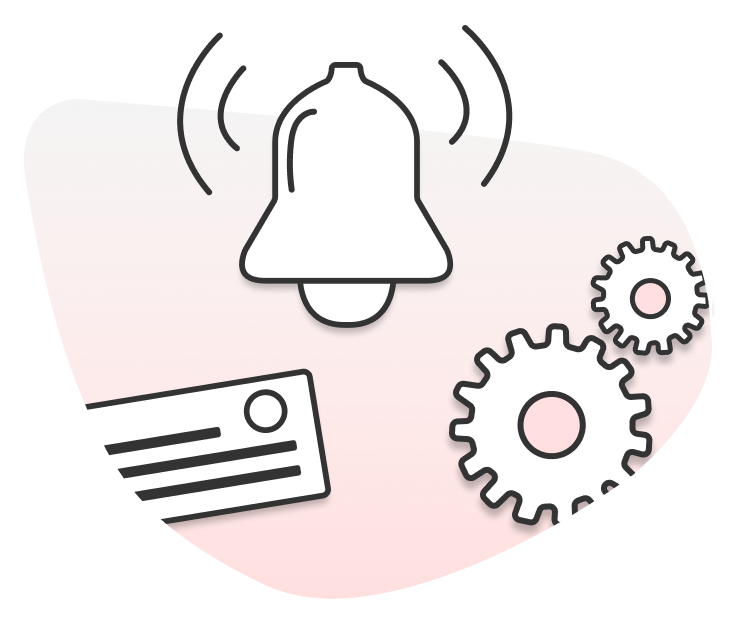

Progressive web app that eases communication between tenants, building managers, and landlords. MVP will only focus on the tenant side of the app. WordPress website for marketing and branding purposes.
Problem Statement
Tenants in apartments and condos need a better way to communicate with building managers because current communication methods can be cumbersome. Residents in apartments and condos can have a hard time communicating with building management to solve issues with their homes, neighbors, and the building.
Recommended Solution
Create an app that eases communication between residents and building management with functionalities such as requesting services and maintenance, filing complaints, receiving notifications (elevator maintenance, electrical outage, exterior cleaning etc.), showing building policies, forum for tenants, and booking building amenities.
The supporting features

Alerts & Notifications
Receive the latest updates and alerts within the building via Tenex!!
Request & Booking
Track upcoming or old notifications, booking and request via our calendar!
Calendar
Send requests to your building manager and follow up via our in-app chat box.
Competitive Analysis
Work Breakdown Structure (Design)
Work Breakdown Structure (Development)
Design Technology
We used Google Suite to create a cloud share of all documentations (from ideation to execution), and Asana to keep track of work packages and deliverables.
e used Figma to collaborate on UI and UX design tasks (information architecture, user flow, wireframes, mockups), Adobe Illustrator and Photoshop to create UI assets, and Adobe Indesign to draft the project proposal.
Development Technology
We utilized Html5, CSS3 and JavaScript for front-end development languages, Sass styling language, Firebase app development software to create the responsive web application
We utilized VS code to manage the codes, cascaded the ordPress website and PHP language to retrive data from the database.
Our database was created on MongoDB management system, hosted via Plesk and GitHub to track version control.
Firebase Cloud Messaging (service requests, filing complaints, forum for tenants). Firebase Authentication (user account). Firebase Cloud Firestore (showing building policies, booking building amenities). Broadcast Channel API (Building announcements and notifications). Image Capture API (taking photos when requesting services).